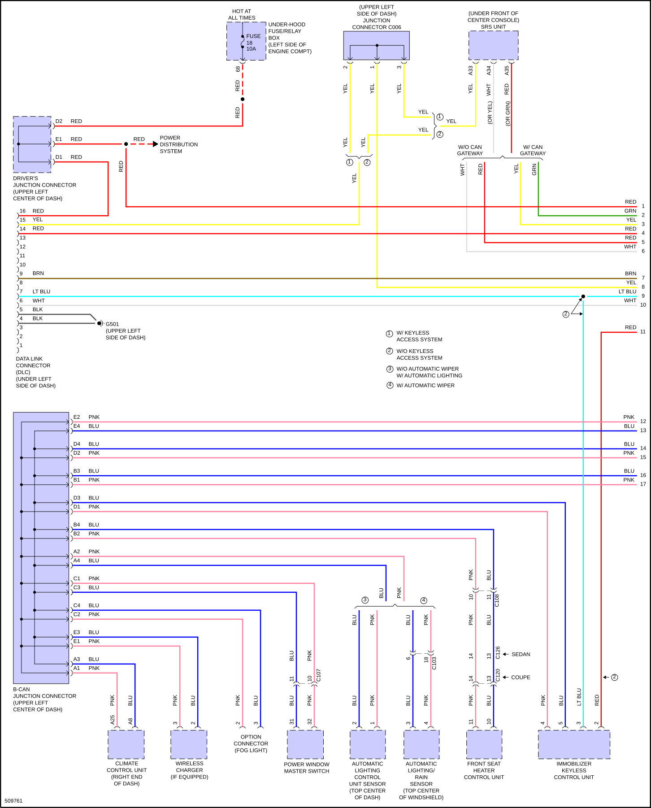
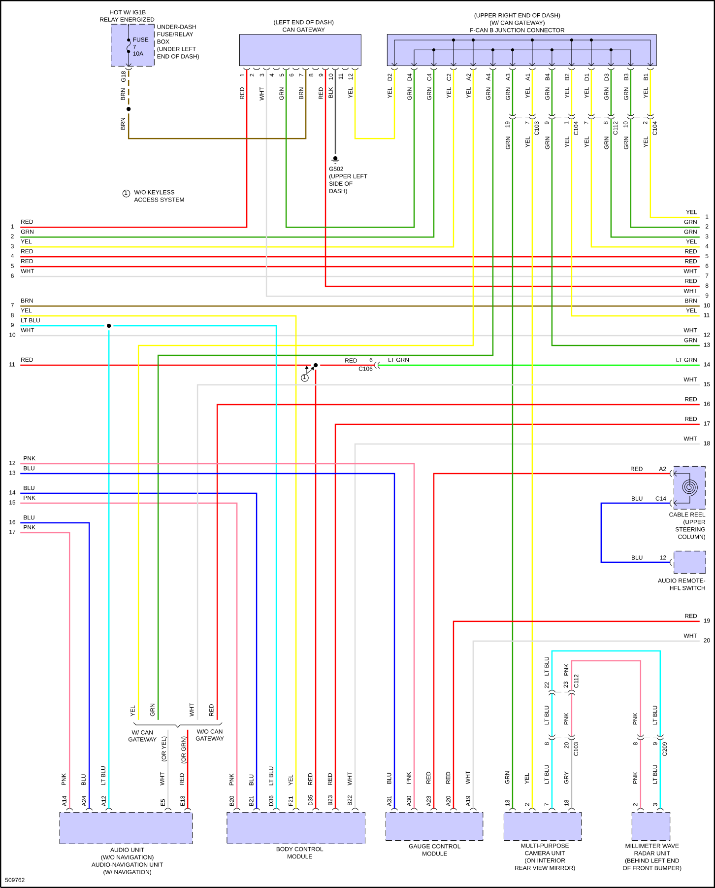
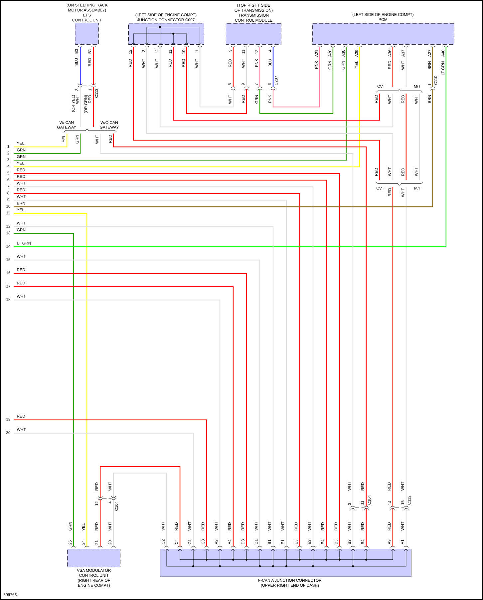

LEMON Manuals
: Even more car manuals for everyone: 1960-2025
Home
>>
Honda
>>
2016
>>
Civic LX, 4D Sedan, Automatic CVT Trans
>>
Repair and Diagnosis
>>
Electrical
>>
Wiring Diagrams
>>
System Wiring Diagrams
>>
Computer Data Lines
Computer Data Lines
Fig 1: Computer Data Lines Circuit (1 of 3)

Fig 2: Computer Data Lines Circuit (2 of 3)

Fig 3: Computer Data Lines Circuit (3 of 3)
